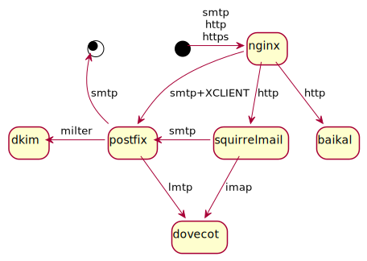

Containers
Created: 2021-05-09 — modified: 2021-05-17 — tags: Containers
How I decided to (re)configure them
Intro
Containers are nice:
They force you to be careful about storing your configuration: instead of modifying vendored config files in various places, you should either "bake" your config into image (thus, likely, documenting all changes in Dockerfile), or expose few files/dirs to the container (thus, likely, limiting your config to only few files).
They are good for portability: if you rented a cloud VM ~10 years ago and it's less than supported time for the OS you installed at that time, then you have to either upgrade it to new version (which is, well, risky), or migrate your config to a new clean installed version, and what did I tell you about modifying vendored config files in the bullet point above?
They are good for security: based on Linux security features (like chroot), they might be not as secure as separate VMs running on the same host (although this is questionable), and definitely not as secure as your own physical hardware behind a bullet-proof door, but still better than nothing.
After all, why let your world-exposed SMTP server access the mail you've already received? Or why not separate you HTTPS certificates from PHP scripts you downloaded from Internet, which might (or might not) contain vulnerabilities, PHP shells, etc? Or from your e-mails?
Of course, one might say that containers are not made for security, but I will answer that no wall is impenetrable, and extra layer of security is better than lack of it.
Birds-eye view

Here's how containers should cooperate with each other:
nginx container is the only one exposed to the Internet, and all SMTP, HTTP, and HTTPS requests come there. It manages all SSL stuff, including STARTTLS encryption layer for SMTP, and forwards plaintext HTTP and SMTP requests to backend servers. It might also serve static sites.
Note that it's the only container having access to the SSL certificates.
SMTP is forwarded to Postfix container, together with XCLIENT which gives Postfix information about remote server.
Other backend servers are SquirrelMail for webmail and Baikal for calendar/address book sync, both of which are implemented in plain PHP.
Sadly, they don't share address book format so have separate address books.
Dovecot container receives messages from Postfix via LMTP and offers them to SquirrelMail via plain IMAP.
Also Postfix uses [DKIM][] milter which is also in separate container - just because it's possible.
However, Sieve mail sorter used to sort incoming (and outgoing) messages runs in the same container as Dovecot - because it's implemented as Dovecot plugin, making it not that easy (if possible at all) to put it into a separate container.
Links are supposed to be to future posts about individual containers:
All sources and relevant configs are available in my containers repo on GitHub.
If the one you'd like to read is missing - drop me a line (link at the bottom of this page)! Also, the picture above was created with PlantUML.